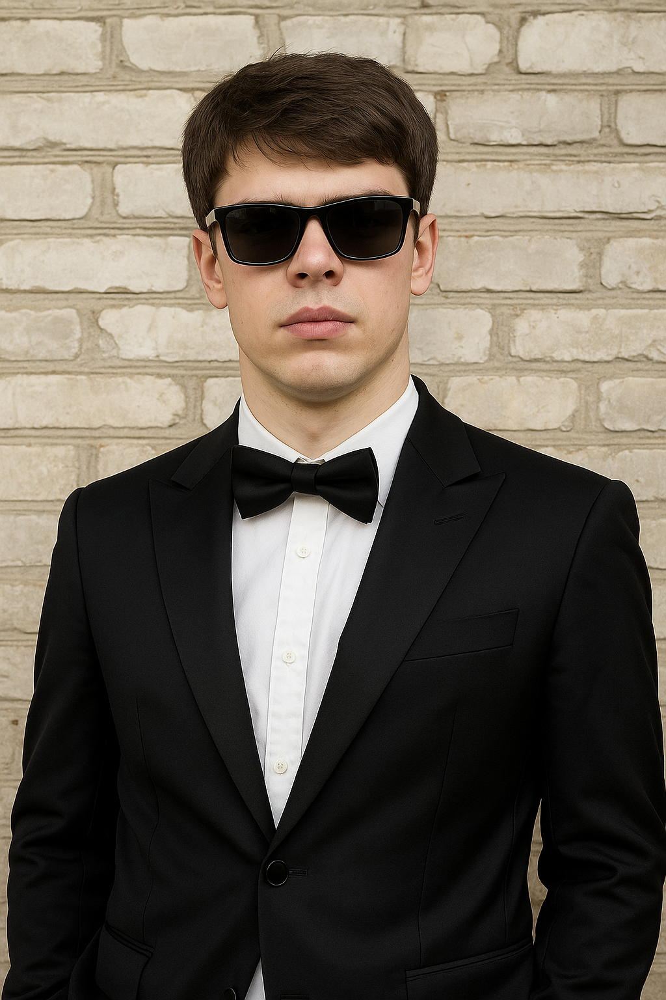
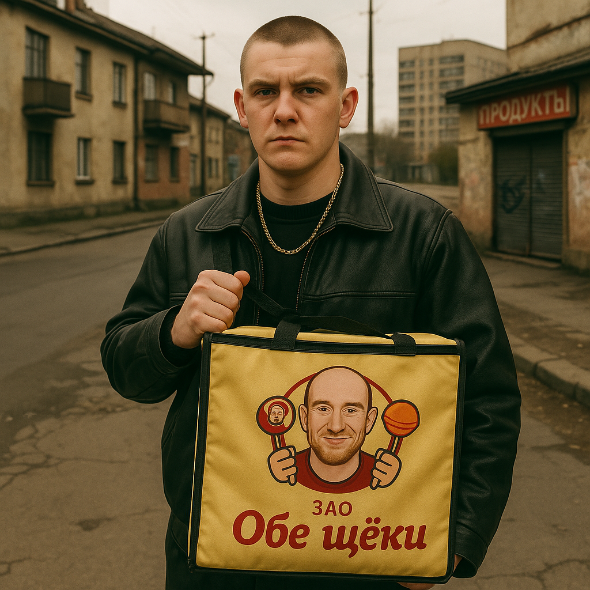

Наша команда
Ипполитов Александр Олегович
Должность: Директор и "Тот, кто всех собрал"
Если бы "Обе щеки" были бандитской группировкой, то Ипполитов был бы ее "крестным отцом". В 90-е он научился управлять людьми и чувствовать, где пахнет деньгами. Его стиль управления брутален: "Конфеты должны быть сладкими, а договоренности — железными".
Фишка: Лучший способ мотивации — "серьезный разговор" в кабинете с тяжелой дверью.
Млынец Владислав Николаевич
Должность: Директор по продажам и "Главный по харизме"
Начинал в Burger King, где довел искусство продаж до совершенства. Его карьера в "Обеих щеках" началась, когда он убедил Ипполитова нанять его, описав бургер. За 10 лет увеличил обороты компании в 5 раз. Может продать карамель даже диабетику.
Фишка: Маркетинг — это искусство обаяния. Однажды конкурент купил партию конфет "для душевного спокойствия".
Федкович Кирилл Васильевич
Должность: "Спец по кадрам" (советник директора)
Бывший полковник СИЗО №7, знает, где лежат все скелеты. В 90-е с Ипполитовым "решали вопросы". Благодаря его связям, компания использует труд заключенных. Проверяющие никогда не находят нарушений — Федкович "объясняет" законы.
Фишка: На корпоративах рассказывает байки про тюремные побеги — никто не знает, шутит ли он.
Данилов Вадим Андреевич
Должность: Лицо компании
Когда-то был бродягой, теперь его лицо на упаковках и билбордах. Ипполитов увидел в нем "настоящее, народное лицо". Вадим до сих пор не понимает, почему его фото продает конфеты: "Я просто стоял и смотрел в камеру… голодным взглядом".
Фишка: На всех фото выглядит слегка растерянным, что добавляет обаяния.
Ваврук Антон Олегович
Должность: Главный логист ("Тот, кто всегда приезжает")
От грузчика до самого надежного водителя. Возил карамель через блокпосты и даже ушел от погони на грузовике с тонной сахара. "Я просто ехал, а они отстали", — говорит он.
Фишка: Находит маршруты, которых нет на картах.